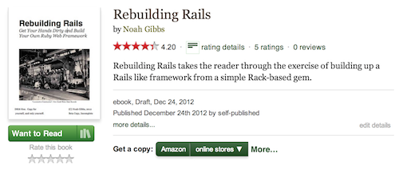

No More Lost Data
Get Rails Migrations Right
You never sweat as hard as when you hit "enter" on "rake db:migrate" on your prod data. Line for line, no other code in Rails is as likely to destroy your users' data. Or get you fired.
How often has a migration locked a big table, causing an hour of unexpected downtime? Or been fine in development, then died mid-deploy in production and you're suddenly sweating bullets and typing SQL on your production server, trying desperately to fix it at 2am?
A migration combines all the stress of raw SQL (did I forget an important 'where' clause? Is my join wrong?) with code you can't easily test. Every migration starts as weird dodgy legacy code.
The more uptime you need, the worse migrations get. Want to drop a column? Want to be sure that ActiveRecord isn't ever using it? Good luck with that. Rolling deploys? Everything gets harder.
Wouldn't it be great if migrations were just more code? If you could easily do good code reviews, and you knew Rails' weird hidden problems around migrations? If you could just do no-downtime deploys and rolling deploys without the slightest bit of fear?
No More Lost Data is here for you. It has procedures to catch your migration bugs early, including difficult bugs with performance and production data. Code review guidelines, checklists, recipes for difficult operations... It's all there.
Better yet, it explains why in great detail. Not every migration needs "DefCon 4" procedures. The best is to know when you need to worry and how to get rid of as much of it as possible. Fix your problems in staging, in code review, or by avoiding difficult situations entirely. A little experienced advice can go a long way.

By This Author...
No More Lost Data is by Noah Gibbs, author of Rebuilding Rails. Noah has presented at the Golden Gate Ruby Conference, taught Ruby on Rails at Carnegie Mellon’s Silicon Valley campus for their MSE program.
Rebuilding Rails has been used at the University of Washington, several different Rails bootcamps and Satish Talim’s RubyLearning.com class. It has also been the subject of Ruby conference presentations by Guille Carlos and Nishant Modak.
What drew my attention to your book was that […] I'm the type of developer that likes to know how things tick at a very deep level. The guy who messed with Assembler but knew he didn't have to. I'm not a huge fan of magic when itcomes to programming for the fact that when you get into trouble with code or find yourself in a complex edge case, or even a bug, knowing more about what's going on "behind the scenes" is very helpful.
I found your book there a while back and finally over Christmas I've had some time to work through it. It's satisfying a whole load of curiosities that I had and I'm learning and clarifying a lot of things. In fact, I'm like a kid in a candy store. It's so nice to be spoon fed this info as it's a lot of work to dig it out all by oneself.
What You'll Get
- The Big Checklist to catch migration problems early and not lose data
- Ten rules for code review of migrations
- How to migrate data with low site downtime or no downtime
- Tricks, recipes, and pro-tips for migrations on real sites with real data
Is "No More Lost Data" For You?
This book is for people running sites with data you care about. Often your customers' data.
- You're a professional Rails programmer? You know that every lost engineer hour costs your company around $100? It's for you.
- You're running a busy site, and worried about data loss and slow migrations? For you.
- Need to understand the tradeoff between migration complexity and downtime? For you.
- Need code review guidelines for migrations? Definitely for you.
Alternately...
- Just learning Rails? Don't know the basics of migrations? Not for you. Read the Rails Guide, it's awesome.
- You don't mind spending many hours experimenting and reading blog posts for the same info? Not for you.
- Don't care about site downtime during deploys? Probably not for you.
- Just running a development site for yourself? Probably not for you.
More Praise for Rebuilding Rails, by this author
This is a must-have book for anyone seriously planning to work or working in Sinatra, Rails.
Okay, damn you, you win! I'll buy the book: the exercises are just too good. […] You write as though your audience has minimal knowledge
and limitless intelligence.
Thanks, Noah! Really jacked to read this highly recommended book by my teachers at University of Washington.

Buy now on Gumroad!
Not 100% Sure It Saved You Money? Return it.
This book will save you far more money than it costs. That's why I'm aiming it at professional teams. If you read it and don't agree, email me within 30 days for a full refund.